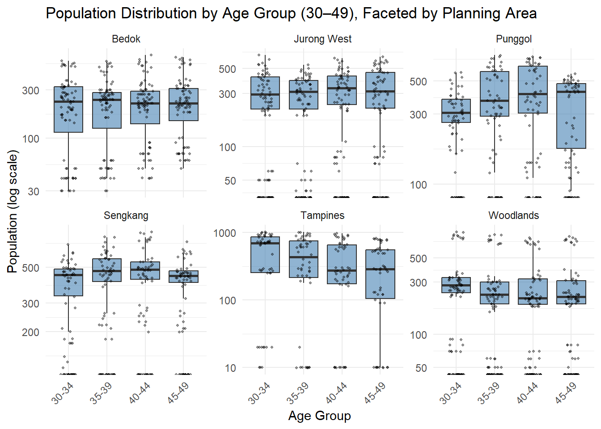
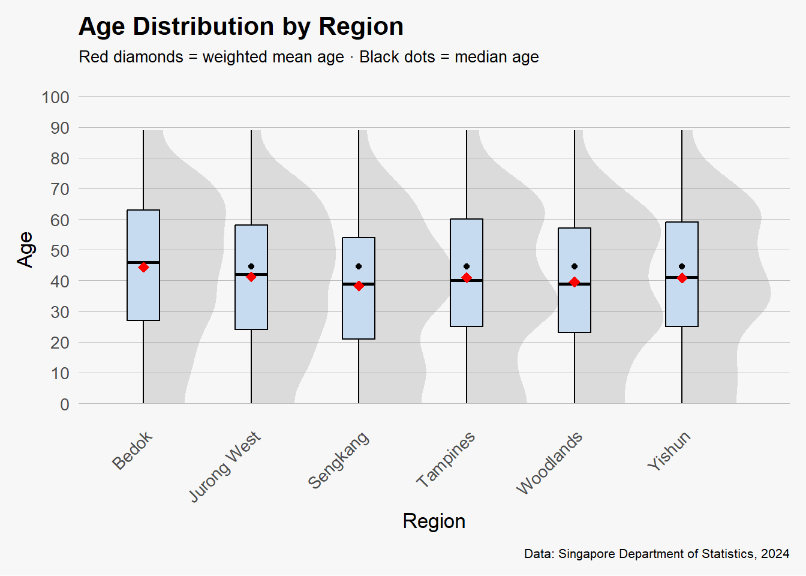

pacman::p_load(tidyverse, haven,
ggrepel, ggthemes,
ggridges, ggdist,
patchwork, scales, ggExtra)Take-home Exercise 1 (Part 2)
1 Introduction
This page presents a visualisation critique and redesign based on a submission by my course-mate, XU XINYI, for the third exploratory data analysis task (EDA 3). The original plot titled “Box Plot with Data Superimposed – Population by Age Group (30–49), Across Planning Areas (2024)” used faceted box plots to visualize population distribution across six major planning areas in Singapore.
2 Getting started
2.1 Load packages
The following R packages will be loaded using the pacman::p_load() function.
2.2 Import data
To accomplish the task, Singapore Residents by Planning Area / Subzone, Single Year of Age and Sex, June 2024 dataset shares by Department of Statistics, Singapore (DOS) should be used.
The code chunk below imports respopagesex2024.csv into R environment by using read_csv()function of readr package. readr is one of the tidyverse package.
We import this dataset as sgresident
sgresident <- read_csv("data/respopagesex2024.csv ")2.3 Data preprocessing
We first take a look at the data and check if there are any duplicates.
glimpse(sgresident)Rows: 60,424
Columns: 6
$ PA <chr> "Ang Mo Kio", "Ang Mo Kio", "Ang Mo Kio", "Ang Mo Kio", "Ang Mo K…
$ SZ <chr> "Ang Mo Kio Town Centre", "Ang Mo Kio Town Centre", "Ang Mo Kio T…
$ Age <chr> "0", "0", "1", "1", "2", "2", "3", "3", "4", "4", "5", "5", "6", …
$ Sex <chr> "Males", "Females", "Males", "Females", "Males", "Females", "Male…
$ Pop <dbl> 10, 10, 10, 10, 10, 10, 10, 10, 30, 10, 20, 10, 20, 30, 30, 10, 3…
$ Time <dbl> 2024, 2024, 2024, 2024, 2024, 2024, 2024, 2024, 2024, 2024, 2024,…sgresident[duplicated(sgresident),]# A tibble: 0 × 6
# ℹ 6 variables: PA <chr>, SZ <chr>, Age <chr>, Sex <chr>, Pop <dbl>,
# Time <dbl>2.4 Change data type of selected variables
Variables with inappropriate data type are Age, Sex, Time.
sgresident <- sgresident %>%
mutate(Age = as.numeric(Age))
sgresident <- sgresident %>%
mutate(Sex = factor(Sex, levels = c("Males", "Females")))
sgresident <- sgresident %>%
mutate(Time = as.integer(Time))2.5 Check for missing values
The age column has 664 missing values, which have been stored as strings before data type conversion. In this case, we do not need to remove those data.
colSums(is.na(sgresident )) PA SZ Age Sex Pop Time
0 0 664 0 0 0 2.6 Preview pre-processed dataframe
We use the function head() to preview the first few rows of the pre-processed dataframe:
head(sgresident, 200)# A tibble: 200 × 6
PA SZ Age Sex Pop Time
<chr> <chr> <dbl> <fct> <dbl> <int>
1 Ang Mo Kio Ang Mo Kio Town Centre 0 Males 10 2024
2 Ang Mo Kio Ang Mo Kio Town Centre 0 Females 10 2024
3 Ang Mo Kio Ang Mo Kio Town Centre 1 Males 10 2024
4 Ang Mo Kio Ang Mo Kio Town Centre 1 Females 10 2024
5 Ang Mo Kio Ang Mo Kio Town Centre 2 Males 10 2024
6 Ang Mo Kio Ang Mo Kio Town Centre 2 Females 10 2024
7 Ang Mo Kio Ang Mo Kio Town Centre 3 Males 10 2024
8 Ang Mo Kio Ang Mo Kio Town Centre 3 Females 10 2024
9 Ang Mo Kio Ang Mo Kio Town Centre 4 Males 30 2024
10 Ang Mo Kio Ang Mo Kio Town Centre 4 Females 10 2024
# ℹ 190 more rows3 Visualisation selected
3.1 Original Work
The visualisation I selected for critique is the third exploratory data analysis (EDA) plot submitted by my classmate, titled “EDA 3: Box Plot with Data Superimposed – Population by Age Group (30–49), Across Planning Areas (2024).”
This is a faceted boxplot with raw data values superimposed, designed to visualise the population distribution of individuals aged 30 to 49 across six major planning areas in Singapore for the year 2024.
Each planning area is displayed in a separate facet, allowing for structured comparisons across regions. The visual reveals that Tampines and Bedok have relatively high and consistent population levels across all age bands within the 30–49 range, whereas Sengkang and Punggol show pronounced peaks between ages 35 and 44, reflecting their family-oriented demographic profiles. The use of a logarithmic y-axis serves to highlight disparities between densely and sparsely populated subzones, improving the perceptibility of variation across different scales.

# Step 1: Prepare data
df_pa_box <- sgresident %>%
mutate(
Age = as.numeric(Age),
AgeGroup = cut(
Age,
breaks = seq(0, 100, by = 5),
right = FALSE,
include.lowest = TRUE,
labels = paste(seq(0, 95, by = 5), seq(4, 99, by = 5), sep = "-")
)
) %>%
filter(Age >= 30, Age < 50) %>%
drop_na(AgeGroup)
# Optional: focus only on top 6 PAs for readability
top6_pa <- df_pa_box %>%
group_by(PA) %>%
summarise(Total_Pop = sum(Pop)) %>%
arrange(desc(Total_Pop)) %>%
slice_head(n = 6) %>%
pull(PA)
df_pa_box <- df_pa_box %>% filter(PA %in% top6_pa)
# Step 2: Boxplot with jittered data, faceted by PA
ggplot(df_pa_box, aes(x = AgeGroup, y = Pop)) +
geom_boxplot(fill = "steelblue", alpha = 0.6, outlier.shape = NA) +
geom_jitter(width = 0.2, alpha = 0.4, color = "black", size = 0.8) +
scale_y_log10() +
facet_wrap(~ PA, scales = "free_y") +
labs(
title = "Population Distribution by Age Group (30–49), Faceted by Planning Area",
x = "Age Group", y = "Population (log scale)"
) +
theme_minimal() +
theme(axis.text.x = element_text(angle = 45, hjust = 1))4 Critique
4.1 Good Visual Design Principles
4.1.1 Faceted Layout Enables Clear Regional Comparison
The original chart adopts a faceted layout based on Planning Areas, which allows readers to easily compare intra-region age distributions as well as inter-region demographic trends. This structure enhances analytical clarity by organizing data into manageable visual units.
4.1.2 Superimposed Raw Data Points Enhance Distribution Transparency
By overlaying raw population data on each boxplot, the visualisation goes beyond summary statistics and allows viewers to see the spread, density, and presence of outliers in each age group. This contributes to a more data-transparent and trustworthy representation.
4.1.3 Logarithmic Scale Effectively Handles Skewed Data
The use of a log-transformed y-axis appropriately addresses large disparities in population counts across planning areas. It compresses extreme values and prevents dominant regions from visually overshadowing those with smaller populations, thereby supporting a fairer visual comparison.
4.2 Further Improvement
4.2.1 Age Range Selection is Narrow, Limiting Holistic Insights
The original visualization only focuses on the 30–49 age group, which captures a working-age population but neglects other important demographic segments such as youths and the elderly. By restricting the age scope, the chart omits critical signals related to ageing populations and young family concentrations. The revised version addresses this by including the full age spectrum, providing a more comprehensive demographic perspective.
4.2.2 Visual Complexity Reduces Interpretability
With six separate panels, numerous overlaid data points, and a log-scaled axis, the original chart demands high cognitive effort. Viewers may find it difficult to extract key insights at a glance. In contrast, the revised visual adopts a consolidated layout, plotting all planning areas on the same axis, which facilitates faster and more effective interpretation.
4.2.3 Lack of Statistical Annotations and Visual Emphasis
While the original boxplots display medians and quartiles, they omit key statistical markers such as weighted mean age or explicit group-level annotations. The revised version improves upon this by adding red diamonds to indicate weighted means and black dots for medians. These additions guide attention to population central tendencies and enhance overall communicative clarity.
5 Makeover
The following visualization represents a makeover of the original EDA 3 plot, which initially focused on the population distribution of residents aged 30–49 across six major planning areas in Singapore. While the original plot effectively used faceted boxplots and data overlays to highlight regional differences within a specific age group, it had several limitations including restricted age scope, visual complexity, and lack of clear statistical markers.
To address these issues, the makeover plot expands the analysis to include the entire resident age range, offering a more holistic view of demographic structures across regions. It consolidates the six planning areas into a single coordinate space, simplifying comparisons and improving interpretability. Additionally, the visual includes weighted mean ages (marked by red diamonds) and medians (marked by black dots) for each region, enhancing the reader’s ability to detect central tendencies and demographic shifts.

library(ggplot2)
library(dplyr)
library(ggdist)
library(scales)
df_age_dist <- sgresident %>%
mutate(Age = as.numeric(Age)) %>%
drop_na(Age, PA, Pop)
top4_pa <- df_age_dist %>%
group_by(PA) %>%
summarise(Total_Pop = sum(Pop, na.rm = TRUE)) %>%
arrange(desc(Total_Pop)) %>%
slice_head(n = 6) %>%
pull(PA)
df_age_dist <- df_age_dist %>%
filter(PA %in% top4_pa)
mean_age <- df_age_dist %>%
group_by(PA) %>%
summarise(weighted_mean_age = weighted.mean(Age, w = Pop, na.rm = TRUE), .groups = "drop")
ggplot(df_age_dist, aes(x = PA, y = Age, weight = Pop)) +
stat_halfeye(fill = "grey60", color = NA, alpha = 0.3) +
geom_boxplot(
aes(group = PA),
width = 0.3,
fill = "#c6dbef",
color = "black",
outlier.shape = NA
) +
stat_summary(geom = "point", fun = median, color = "black") +
geom_point(
data = mean_age,
aes(x = PA, y = weighted_mean_age),
color = "red", size = 3, shape = 18, inherit.aes = FALSE
) +
scale_y_continuous(
limits = c(0, 100),
breaks = seq(0, 100, 10)
) +
labs(
title = "Age Distribution by Region",
subtitle = "Red diamonds = weighted mean age · Black dots = median age",
caption = "Data: Singapore Department of Statistics, 2024",
x = "Region",
y = "Age"
) +
theme_minimal(base_size = 13) +
theme(
plot.background = element_rect(fill = "grey97", color = NA),
panel.grid = element_blank(),
panel.grid.major.y = element_line(linewidth = 0.1, color = "grey75"),
strip.background = element_blank(),
axis.text.x = element_text(angle = 45, hjust = 1),
plot.title = element_text(face = "bold"),
plot.subtitle = element_text(margin = margin(b = 10), size = 10),
plot.caption = element_text(margin = margin(t = 10), size = 8),
plot.margin = margin(10, 10, 10, 10)
)